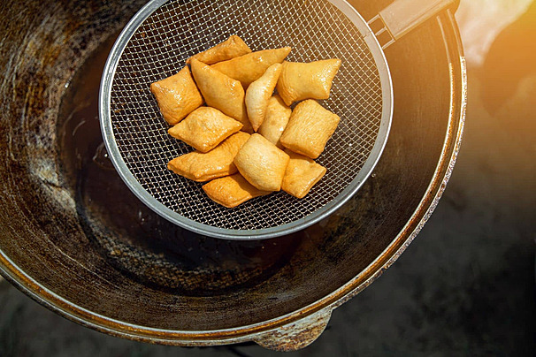

Back
Baursak

Description
Baursak is the quintessential Kazakh bread, consisting of small pieces of dough deep-fried
until they are golden and puffy. They are served at every celebration and are symbolic of
hospitality, often eaten with tea, honey, or alongside savory dishes.
Ingredients
- 500g Flour
- 1 cup Warm milk
- 1 tbsp Yeast
- 1 tbsp Sugar
- 1 tsp Salt
- Vegetable oil for frying
Steps
- Dissolve yeast and sugar in warm milk; let it sit until foamy.
- Mix with flour and salt to form a soft dough. Let it rise in a warm place for 1 hour.
- Roll out the dough and cut into small circles or squares.
- Heat a generous amount of oil in a deep pan.
- Fry the dough pieces until they puff up and turn golden brown on all sides.